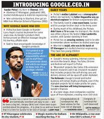
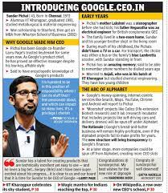

Pichai Sundararajan, better known as Sundar Pichai, is an Indian-American business executive. He is the chief executive officer of Alphabet Inc. and its subsidiary Google. Born in Madurai, India, Pichai earned his degree from IIT Kharagpur in metallurgical engineering.
Born on July 12, 1972 an Indian American boy from Madurai in Tamil Nadu was appointed as a new CEO of Google on 10th August 2015. It became a moment of pride for the Indian community to see an Indian-born make it to the list of the CEOs in the technological industry and Sundar Pichai’s life story is worth a share. SUNDAR PICHAI (or Sundarajan Pichai), a name now well-known across the globe has had his fair share of struggles before making it to the top.
From humble beginnings as a middle class student in India to one of the lead product developers on Google Chrome, Sundar Pichai’s road to the top of Google has been full of twists and turns.
Sundar Pichai’s impressive degrees and work experience initially joined as a product manager leading innovation efforts on software products including Google Chrome, Chrome OS and Google Drive. He made a very public debut of chrome OS and the Chrome book in 2011.
In 2013, Pichai became the leader of the Android OS, which powers nearly half of the smartphones in the US and more than 80% of smartphones all across the globe.
Until Aug 2015, Google was run by co-founders Larry Page and Sergey Brin with the support of former CEO and current executive Eric Schmidt.Formerly, Pichai was a trusted member of Google Leadership Team, then becoming a trusted advisor to Page and Brin.
Pichai joined Google in 2004, where he led the product management and innovation efforts for a suite of Google’s client software products, including Google Chrome and Google OS, as well as being largely responsible for Google Drive.
On May 20, 2010, Pichai announced the open sourcing of the new video codec VP8 by Google and introduced the new video format, WebM.
On March 13, 2013, Pichai added android to the list of Google products that he oversees.
Sundar Pichai, who is the CEO of Google had also been suggested as one of the contenders for the position of CEO at Microsoft in 2014 which eventually was given to Satya Nadella.
On Oct 24, 2015 he stepped into the new position at the completion of the formation of Alphabet Inc. the new holding company for the Google company family.
In Dec 2017, Pichai was a speaker at the world internet conference in China, where he stated that “a lot of work that Google does is to help chinese companies”.
Sundar Pichai (CEO google)
(Joined google in 2004)
As a leader, It is important to not just see your own success, but focus on the success of others.”
 
